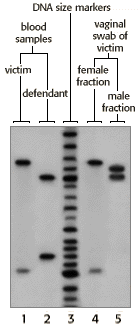

DNA Forensics Problem Set 1
Problem 4: Rape investigation
|
The key portion of the autoradiograph from a single locus probe analysis of various DNA samples in a rape investigation is shown in this figure.
Samples of DNA were loaded into the following lanes:
|
 |


The Biology Project
University of Arizona
Tuesday, August 20, 1996
Contact the Development Team
http://biology.arizona.edu
All contents copyright © 1996. All rights reserved.